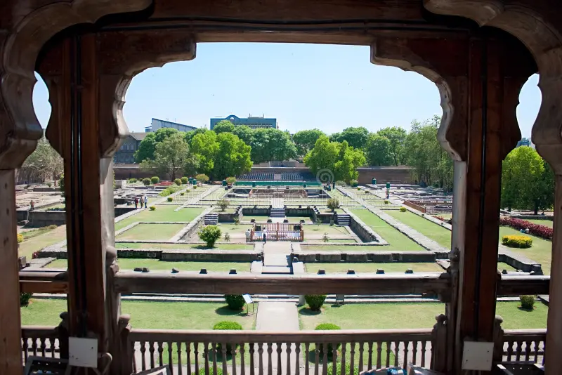
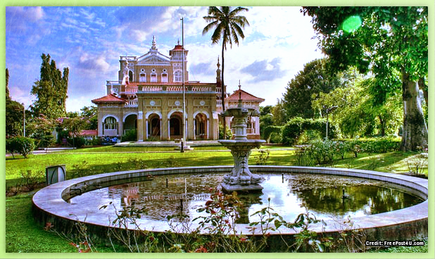

Famous Places in Pune

Shaniwar Wada
A historic fort built by the Peshwas in the 18th century.

Sinhagad Fort
A famous trekking destination with beautiful views.

Aga Khan Palace
An important landmark connected with India's freedom movement.